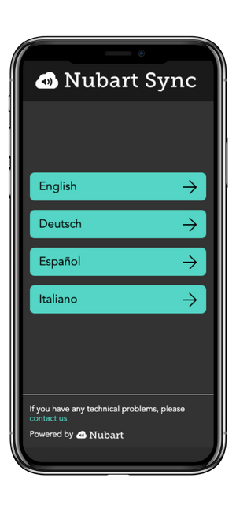
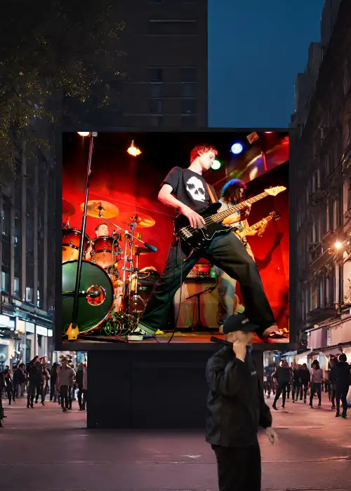
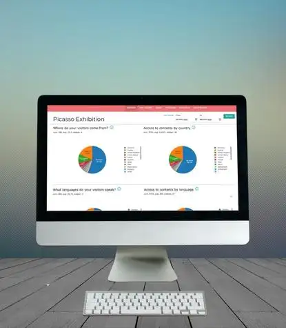
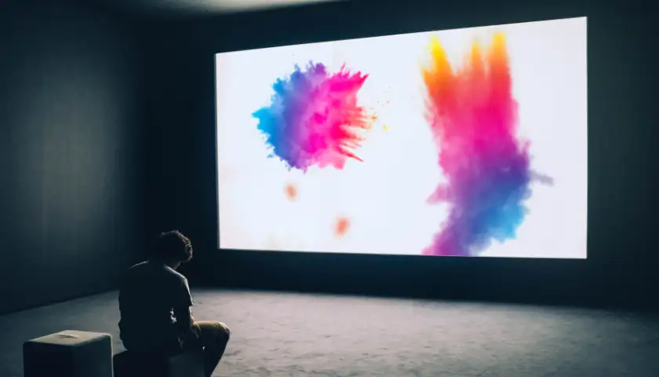
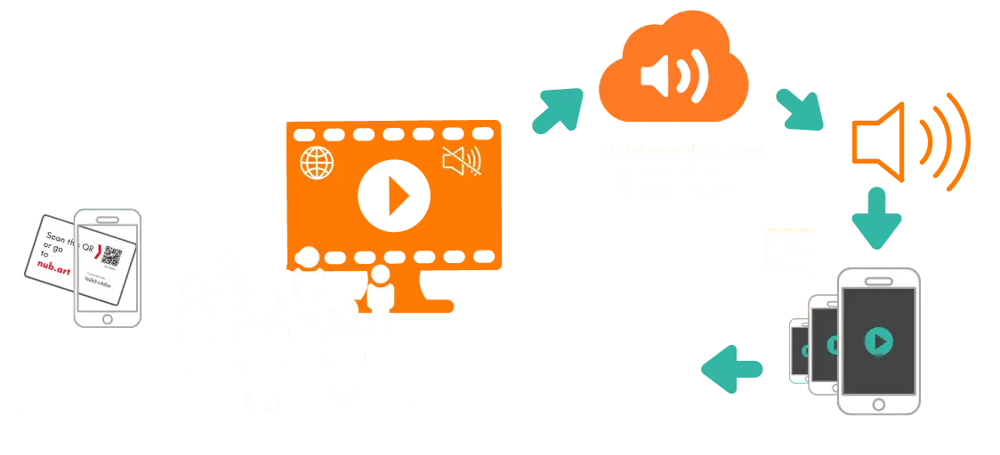
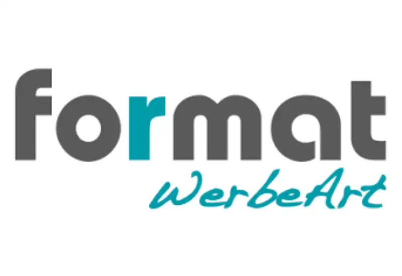
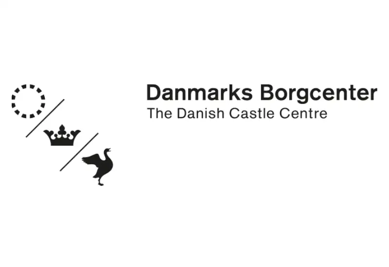

Vídeo y audio emparejados en sincronía a través de internet
Alguien ve un vídeo mudo en una sala de espera, un museo o cualquier otro lugar público.
Escanea un código QR con su teléfono móvil y accede inmediatamente al sonido perfectamente sincronizado en el idioma de su elección.
Esto es Nubart SYNC: un servicio web que añade sonido multilingüe a cualquier pantalla de vídeo silenciosa. Transmite el audio de cada vídeo al propio móvil de tus visitantes y lo mantiene sincronizado con lo que se ve en la pantalla — sin app, sin auriculares y sin hardware especial.
El sonido llegará a tu audiencia en streaming, en perfectamente sincronización con el vídeo y sin latencia perceptible.
Nuestra solución patentada no requiere ningún equipo especial ni sistemas técnicos complejos, como balizas, routers personalizados, aparatos de radiofrecuencia o infrarrojos. Todo lo que tú y tu público necesitáis es una conexión a Internet (WIFI o datos móviles).
Nubart SYNC es totalmente escalable: apta para cualquier número de oyentes. Es posible la reproducción en bucle (looping). La longitud del vídeo es irrelevante. También es adecuada para grandes proyecciones, murales de vídeo en mosaico, proyecciones láser, mappings...
Demo para probar Nubart SYNC
Prueba nuestra demo
Reproduce el vídeo aquí
En nuestra demo, ves el vídeo en streaming. Pero en un caso de uso real, el vídeo se podría reproducir de forma local (tarjeta SD, disco duro...).

Escanea este código QR con tu teléfono móvil

Elige un idioma

Escucha la pista de audio
Demo para probar Nubart SYNC
Abre esta página en un PC para probar nuestra demo
Para probar nuestra demo, necesitarás dos dispositivos: uno para abrir el vídeo y otro para reproducir la pista de audio sincronizada. Como estás viendo nuestra página web en un smartphone, posiblemente no se den esas condiciones. Por favor, abre esta página en un dispositivo de mayor tamaño (PC o tableta) para probar nuestra demo.
Vídeos en varios idiomas en espacios públicos
¿Por qué Nubart SYNC?
Con Nubart SYNC, incluso las pantallas de vídeo silenciadas pueden hablar.
El espacio público está lleno de vídeos mudos: Anuncios de vídeo en vallas publicitarias y escaparates, información de seguridad en aeropuertos, películas educativas en salas de espera... Pero tanto las normas de seguridad como las de convivencia exigen que estos vídeos estén silenciados.
Estos vídeos podrían reforzar significativamente su mensaje si los espectadores pudieran simplemente escuchar el sonido en streaming en sus teléfonos móviles.
Hasta ahora, este objetivo sólo podía lograrse con complejos sistemas de integración AV y con hardware especial.
Con Nubart SYNC, se puede añadir sonido a los vídeos en espacios públicos sin molestar a los transeúntes. Basta con colocar nuestro código QR junto a la pantalla o integrarlo en el propio vídeo.
Puedes probarlo ahora mismo con nuestra demo.

¿Qué hay actualmente en el mercado para emparejar audio y vídeo?
Qué hace que Nubart SYNC sea mejor que las soluciones convencionales
Soluciones actuales
Hoy en día, sigue siendo necesario un hardware complejo para sincronizar el audio y el vídeo si se emiten desde aparatos distintos: reproductores de vídeo especiales, sistemas de activación por RF, RFID o infrarrojos, i-beacons, etc.
Algunas empresas ofrecen una difusión por Wifi, pero sólo mediante un portal cautivo, a veces en combinación con una app.
Qué hace que Nubart SYNC sea mejor
El valor de Nubart SYNC reside en su revolucionaria sencillez.
Por primera vez, una fuente de audio multilingüe y en perfecta sincronización labial con un vídeo público puede transmitirse espontánea y fácilmente a cualquier transeúnte a través de un sencillo código QR.
La banda sonora sincronizada se abre simplemente en el navegador del usuario.
¿Qué significa eso?
Nubart SYNC es una solución SaaS rentable que tiene el potencial de revolucionar el mundo de la señalización digital, el DOOH, la publicidad y la accesibilidad.
Nuestro innovador producto está protegido por patentes en los mercados mundiales más importantes.
Estadísticas para tus pantallas de vídeo públicas
Obtén información sobre quién está viendo realmente tu vídeo

Recopila datos de los visitantes sin esfuerzo y respetando la privacidad
Con Nubart SYNC puedes descubrir quién está interactuando con tus vídeos y videoanuncios en espacios públicos. A diferencia de los métodos tradicionales, como las cámaras o los infrarrojos, Nubart SYNC ofrece información fiable sobre el interés real y el comportamiento de los usuarios frente a tus vídeos y te proporciona datos valiosos para la toma de decisiones estratégicas.
Nubart SYNC recopila datos agregados de uso y comportamiento de los smartphones de los usuarios de forma anónima, sin cookies de terceros ni violaciones de la privacidad.
Tendrás acceso a un área de cliente que revela información esencial, como
- País de origen del usuario
- Lengua materna del usuario
- Usuarios por día y por hora
Incluso puedes añadir un formulario de comentarios para hacer preguntas específicas.
Ver las estadísticas de Nubart SYNC en acciónCasos de uso compatibles con Nubart SYNC
Nubart SYNC es adecuado para

Museos
- Vídeos educativos
- Instalaciones de vídeo
(Mejor en combinación con la audioguía PWA de Nubart)

Publicidad
- Pantallas publicitarias
- Publicidad out-of-home (DOOH)
- Show rooms
- Tiendas de DIY
Accesibilidad
- Audiodescripciones
- Lenguaje fácil
- Discapacidad auditiva
Ferias y exposiciones
Sonido para vídeos explicativos para productos complejos en los stands.
Cine
- Streaming multilingüe simultáneo
- Festivales de cine en la calle
- Cine al aire libre o autocines
Salas de espera
- Inmigración
- Hospital
- Administraciones
Aeropuertos
- Instrucciones de seguridad
- Entretenimiento en las zonas de espera
Proyección o mapping sobre edificios
El público puede escuchar música sincronizada o una explicación directamente en su smartphone.
Y muchos otros
Seguro que hay aplicaciones para Nubart SYNC en las que aún no hemos pensado, ¡cuéntanoslas!
Nubart SYNC - Esquema de funcionamiento
Cómo funciona Nubart SYNC

Sistemas de reproducción de vídeo compatibles con Nubart SYNC
Opciones de reproductor de vídeo compatibles:
Cualquier pantalla o reproductor con conexión a Internet
Si su dispositivo puede abrir un navegador moderno y dispone de conexión a Internet, debería ser compatible con Nubart SYNC.
Brightsign
Compatible con reproductores de vídeo Brightsign habilitados para Internet, como el HD224. Compatible con el software de señalización digital Brightsight Author.
Micromapping y otras soluciones AV
Mientras tu dispositivo tenga conexión a Internet podrás integrar nuestra API en tu sistema de reproducción personalizado. Por favor, escríbenos.
Sistemas de reproducción de audio compatibles con Nubart SYNC
Opciones de reproductor de audio compatibles:
Cualquier smartphone
Las pistas de sonido de Nubart SYNC se abren en un navegador, asi que cualquier smartphone con un navegador y la capacidad de escanear un código QR es compatible. No es necesario descargar ninguna aplicación.
Precios y calculadora de costes
Calcula el coste de tu Nubart SYNC en segundos
Plan estándar
- Idiomas ilimitados por vídeo
- Hasta 2 horas de asesoramiento durante la reproducción
- Cuenta de cliente con estadísticas de uso
- 25 €/mes (275 €/año) por vídeo adicional
Precios sin IVA · permanencia mínima de 5 meses · Condiciones
Tu coste de SYNC
Calcúlalo en segundos
Paso 1 de 4
¿Para cuántos vídeos necesitas audio?
Paso 2 de 4
¿Es una exposición temporal o una instalación permanente?
Esto determina si calculamos un total fijo para la duración, o una suscripción continua.
Paso 3 de 4
¿Se integrará también este audio en una audioguía PWA de Nubart?
Paso 4 de 4
Tu estimación
Tu solicitud de presupuesto está lista
Copia el texto de abajo y pégalo en tu cliente de correo, o usa el botón «Abrir en la app de correo» si tienes uno configurado.
Preguntas más frecuentes
Preguntas frecuentes sobre Nubart SYNC
Puedes descargarlas en PDF aquí:
Descarga nuestras instrucciones para Brightsign
El ancho de banda necesario para la señal de sincronización es muy bajo.
Clientes que utilizan Nubart SYNC
Clientes de Nubart SYNC (Selección)

ArtDidactics (España)
Exposición inmersiva "Dalí Challenge"

Format WerbeArt (Alemania)
Stand en una feria
Museo Koge (Dinamarca)
Vídeos educativos

Musea Brugge (Bélgica)
Vídeos explicativos in situ

Danish Castle Center (Dinamarca)
Vídeos explicativos in situ
Centro de visitantes de Cesarea (Israel)
Audioguía accesible para personas con discapacidad visual y cognitiva
Contacta con Nubart SYNC
Ponte en contacto con nosotros
Puedes llamarnos o escribirnos directamente, pero si deseas una demo personalizada, te recomendamos que rellenes nuestro formulario, ya que las preguntas que contiene te guiarán en el proceso.
Rellena nuestro formulario
Llámanos
España y LATAM: +34 678650746Otros países: +49 30 216 02 001